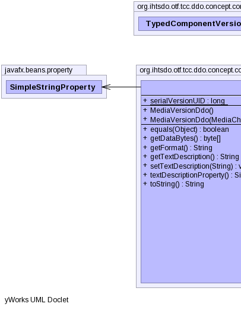
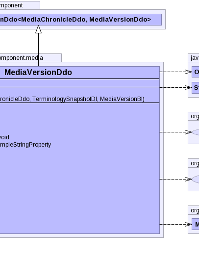
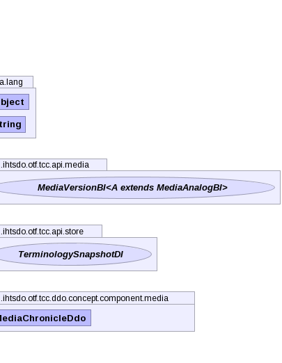

public class MediaVersionDdo extends TypedComponentVersionDdo<MediaChronicleDdo,MediaVersionDdo>
|  |  |  |
| Type | Property and Description |
|---|---|
javafx.beans.property.SimpleStringProperty |
textDescription |
typeReferencePropertyauthorReferenceProperty, fxTimeProperty, moduleReferenceProperty, pathReferenceProperty, statusReferenceProperty| Modifier and Type | Field and Description |
|---|---|
static long |
serialVersionUID |
typeReferencePropertychronicleunspecifiedUserUuid| Constructor and Description |
|---|
MediaVersionDdo() |
MediaVersionDdo(MediaChronicleDdo chronicle,
TerminologySnapshotDI ss,
MediaVersionBI another) |
| Modifier and Type | Method and Description |
|---|---|
boolean |
equals(Object obj)
Compares this object to the specified object.
|
byte[] |
getDataBytes() |
String |
getFormat() |
String |
getTextDescription() |
void |
setTextDescription(String textDescription) |
javafx.beans.property.SimpleStringProperty |
textDescriptionProperty() |
String |
toString()
Returns a string representation of the object.
|
getTypeReference, setTypeReference, typeReferencePropertyafterUnmarshal, getAdditionalIds, getAnnotations, getChronicle, getComponentNid, getConcept, getIdCount, getPrimordialComponentUuid, getUuids, getVersionCount, getVersionsauthorReferenceProperty, fxTimeProperty, getAuthorReference, getFxTime, getModuleReference, getPathReference, getStatus, getStatusString, getViewCoordinateUuid, informAboutUuid, moduleReferenceProperty, pathReferenceProperty, setAuthorReference, setFxTime, setModuleReference, setPathReference, setStatus, setStatusString, setViewCoordinateUuid, statusReferencePropertypublic static final long serialVersionUID
public MediaVersionDdo()
public MediaVersionDdo(MediaChronicleDdo chronicle, TerminologySnapshotDI ss, MediaVersionBI another) throws IOException, ContradictionException
IOExceptionContradictionExceptionpublic boolean equals(Object obj)
equals in class TypedComponentVersionDdo<MediaChronicleDdo,MediaVersionDdo>obj - the object to compare with.true if the objects are the same;
false otherwise.public javafx.beans.property.SimpleStringProperty textDescriptionProperty()
public String toString()
toString in class TypedComponentVersionDdo<MediaChronicleDdo,MediaVersionDdo>public String getTextDescription()
public void setTextDescription(String textDescription)
public byte[] getDataBytes()
public String getFormat()
Copyright © 2013 International Health Terminology Standards Development Organisation. All rights reserved.